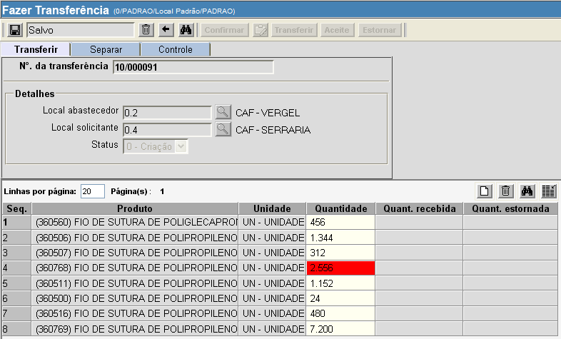
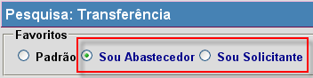
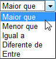
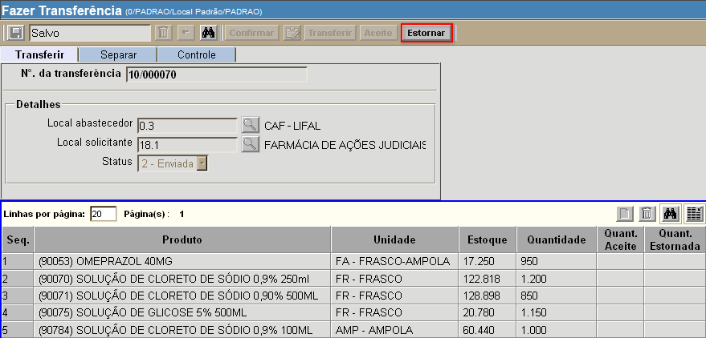
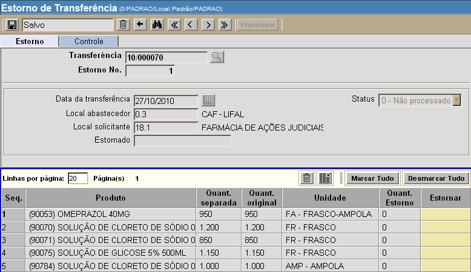
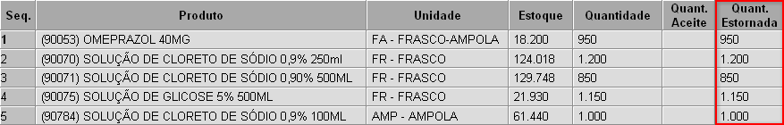
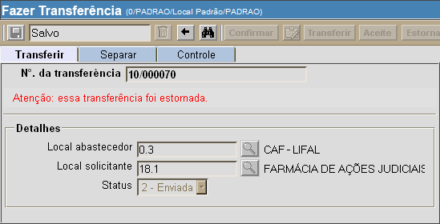

Atender Requisição [ Voltar ]Esta tela tem por função permitir a localização de pedidos de transferência aprovados e pendentes de transferência. Ao final do manual, é apresentado também um guia passo-a-passo para o Estorno de transferência. O formulário "Atender Requisição" encontra-se dentro do menu "Transferência".
Ao clicar no formulário, o sistema exibirá a seguinte tela:
Para visualizar e atender requisições pendentes, siga os passos abaixo: 1º Passo: configure as opções de filtros para localizar as requisições desejadas. Um ou mais filtros poderão ser utilizados concomitantemente. Os filtros disponíveis são:
2º
Passo: após
configurar os filtros da pesquisa, clique no botão
3º Passo: selecione com um clique a linha da requisição que deseja atender. Para selecionar uma requisição, basta clicar em qualquer um dos campos da linha (ver imagem abaixo).
Exemplo:
requisição 10/000067 está selecionada Observação: observe a quantidade de linhas exibidas por página e, ao lado, a página de exibição (ver imagem abaixo). Clique no número da página desejada para ver as outras requisições aguardando consumo.  Dica O status das requisições são exibidos em três cores: a) verde: todos os produtos contidos esta requisição possuem estoque o suficiente para atender a demanda. b) amarelo: apenas alguns produtos contidos esta requisição possuem estoque o suficiente para atender a demanda. c) vermelho: nenhum produto desta requisição possui estoque o suficiente para atender a demanda. 4º Passo: após selecionar a requisição, clique no botão para abrir o registro na tela "Fazer transferência". Se desejar apenas visualizar os detalhes da(s) linha(s) da requisição, clique no botão  (ver imagem abaixo). (ver imagem abaixo).
Após clicar no botão para uma requisição, a tela "Fazer transferência" será aberta. 
Observação:
caso algum dos produtos não possua quantidade suficiente em estoque, o
mesmo terá a quantidade exibida em vermelho. Nesses casos, é preciso
excluir as linhas dos produtos para os quais não há estoque. Para isso,
selecione as linhas em questão e clique no botão
5°
Passo: confira os dados da requisição e clique no botão 6° Passo:
clique no botão
Após imprimir a lista
de separação, clique no botão 7° Passo: após a separação,
clique no botão Estorno de transferênciaVocê pode decidir desfazer uma transferência já realizada no sistema. Lembre-se que só é possível estornar uma transferência caso haja estoque o suficiente no local para os produtos do estorno.Caso a transferência que deseja estornar já esteja sendo exibida em sua tela, prossiga para o 3° passo. Se não, siga os passos abaixo. 1° Passo: na tela inicial do sistema, abra o formulário "Pesquisar transferências", que se encontra dentro do menu "Transferências". 
Ao clicar no formulário, o sistema exibirá a seguinte tela: 
2º Passo: configure os filtros da pesquisa para localizar a transferência que deseja estornar. Antes de utilizar os filtros disponíveis para refinar a pesquisa, certifique-se de selecionar a pesquisa favorita mais adequada: Sou Abastecedor ou Sou Fornecedor (ver imagem abaixo). 
Os filtros disponíves para auxiliar a localização da transferência são:
Exemplos: para localizar
transferências de uma determinada data, utilize a opção "Igual a" e informe
a data desejada; ou, para pesquisar transferências criadas após uma
data específica, selecione a opção "Maior
que" e informe a data de referência.

À medida que os filtros são preenchidos, os resultados são exibidos automaticamente na tabela de resultados. Para abrir uma transferência na tela "Fazer transferência", selecione o registro desejado com um clique.
3° Passo: após abrir o registro
de transferência na tela "Fazer
transferência",
clique no botão .
Após clicar no botão  , a tela "Estorno de transferência"
será aberta para a transferência em questão. Ela carregará os dados dos
produtos contidos na transferência que ainda não foram estornados. , a tela "Estorno de transferência"
será aberta para a transferência em questão. Ela carregará os dados dos
produtos contidos na transferência que ainda não foram estornados.
4° Passo: informe no campo "Estornar" quais produtos deseja estornar. Ao clicar no campo "Estornar" correspondente a um produto, você pode selecionar as opções Sim ou Não. É necessário preencher este campo para todos os produtos da transferência. Se desejar, utilize o botão  para marcar todos os produtos como Sim,
ou seja, que devem ser estornados. Do contrário, utilize o botão
para marcar todos os produtos como Sim,
ou seja, que devem ser estornados. Do contrário, utilize o botão  para especificar que
nenhum dos produtos deve ser estornado. para especificar que
nenhum dos produtos deve ser estornado.Observação: ao menos um produto deve ser marcado como "Sim" para que o estorno possa ser realizado. 5° Passo: após especificar quais produtos devem ser estornados, clique no botão  para salvar as informações. para salvar as informações.6° Passo: clique no botão  para
concluir o estorno. Após
o processamento do estorno, os produtos estornados e respectivas
quantidades serão exibidas no registro original da transferência. para
concluir o estorno. Após
o processamento do estorno, os produtos estornados e respectivas
quantidades serão exibidas no registro original da transferência.
Caso toda a transferência tenha sido estornada, uma mensagem será exibida no registro da transferência.  |
 para retornar os resultados.
para retornar os resultados.  [Excluir]
da grade (ver imagem abaixo). Após excluir ou alterar qualquer uma das
linhas, antes de prosseguir para o 5° passo, é necessário clicar no
botão
[Excluir]
da grade (ver imagem abaixo). Após excluir ou alterar qualquer uma das
linhas, antes de prosseguir para o 5° passo, é necessário clicar no
botão 
 para
confirmá-la.
para
confirmá-la.  para
imprimir a lista de separação.
para
imprimir a lista de separação.  para voltar à tela
principal da transferência.
para voltar à tela
principal da transferência. para
processar a transferência.
para
processar a transferência.